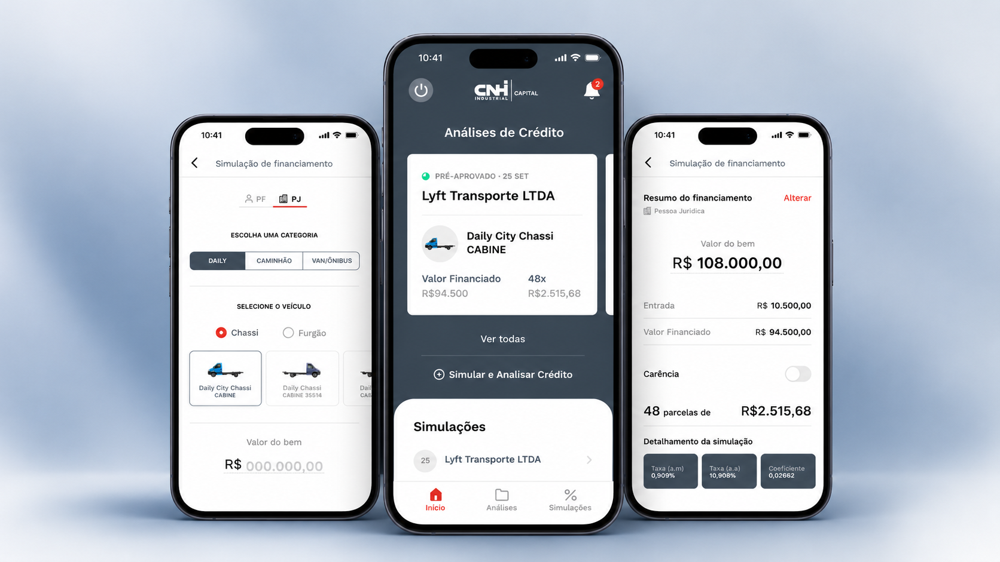
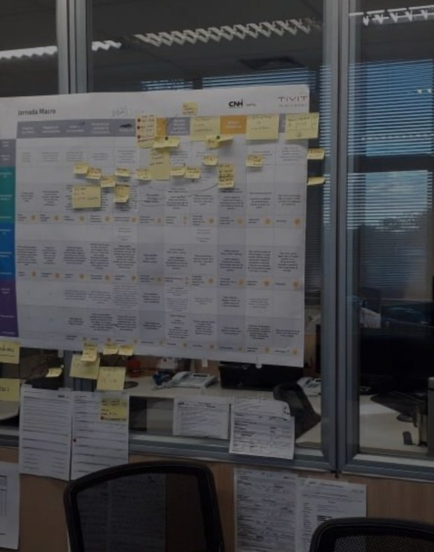
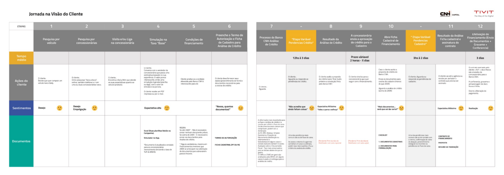
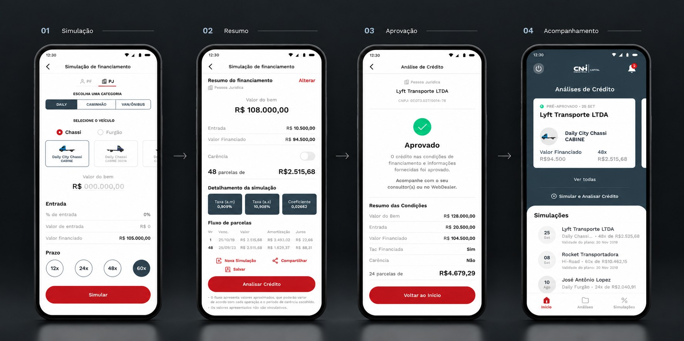

Case 04Tivit Banco CNH IndustrialSimulação e Análise de Crédito
+Capital
Redesenhando a experiência de simulação e análise de crédito do Banco CNH Industrial.
Como simplificar o financiamento de veículos comerciais sem ignorar a complexidade da análise de crédito?

01Contexto e desafio
Condições de financiamento competitivas.
Um processo burocrático e fragmentado.
Como simplificar o processo e apoiar a operação?
02Discovery
Antes de desenhar a solução, era preciso entender a operação.
A investigação buscou compreender a jornada de financiamento de ponta a ponta e as dificuldades de cada etapa. Entrevistas com stakeholders, pesquisa contextual com vendedores e o mapeamento da jornada sustentaram esse entendimento.
- A jornada comercial e a rotina dos vendedores
- As etapas do processo de crédito e documentação
- A interação entre as áreas envolvidas na análise


03Principais insights
O problema não estava apenas no preenchimento de formulários.
A burocracia interferia na negociação.
A demora e as etapas manuais dificultavam o andamento das vendas.
Os vendedores precisavam de fluidez.
A experiência deveria acompanhar a rotina comercial, sem criar obstáculos adicionais.
A simplificação precisava respeitar as regras de crédito.
Nem todas as propostas poderiam seguir o mesmo caminho de análise.
04Estratégia e decisões
Simplificar a experiência sem ignorar a complexidade do crédito.
Da jornada fragmentada a uma experiência digital.
-
- Valor do bem
- Entrada
- Parcela
- Prazo
- Carência
Condições simuladasComeçar pela simulação
Permitir explorar condições de financiamento antes de exigir todos os dados do cliente.
-
SimulaçãoCPF/CNPJ opcionalpara avançarAnálise de créditoCPF/CNPJ obrigatório
Solicitar dados no momento certo
CPF ou CNPJ podiam ser informados depois da simulação, antes de avançar para a análise.
-
Identificação do clienteCliente conhecidoCadastro existenteNovo clienteNovo cadastro
Considerar diferentes contextos
A experiência precisava contemplar clientes conhecidos e novos, respeitando as diferenças de cadastro.
-
Proposta de créditoCasos elegíveisAprovação automáticaDemais casosAnálise padrão
Respeitar os critérios de aprovação
Casos elegíveis poderiam seguir para aprovação automática; os demais continuariam pela análise padrão.
- 01Simulação de condições
- 02Coleta de dados e documentos
- 03Encaminhamento da solicitação
- 04Acompanhamento do processo
05A solução
Uma experiência digital integrada à rotina comercial.

06Resultados
Da proposta à operação.
O aplicativo foi lançado e passou a fazer parte da rotina dos vendedores.
Um processo de financiamento visto como burocrático, complicado e demorado, que fazia o banco perder clientes para concorrentes mais rápidos, ganhou uma experiência digital com simulação de financiamento e análise de crédito em tempo real, levada para dentro da conversa de venda.
07Aprendizados
Em jornadas financeiras, simplificar não significa eliminar a complexidade, mas distribuí-la melhor ao longo da experiência, aproximando o design das necessidades da operação e das regras de crédito.